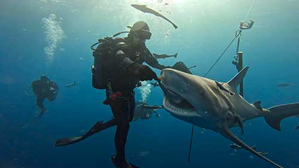
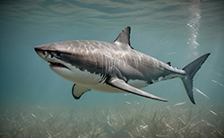
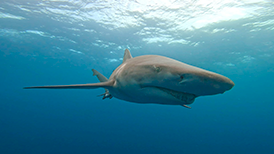
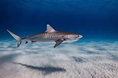

Learn about the wildlife that can be found in areas of travel, and become knowledgable in preparing
for any encounter. Sharks are top predators in the oceans of our world, and it is important to know
what to do when unexpected circumstances arise.

Most Dangerous Sharks

1. Great White Shark

2. Bull Shark

3. Tiger Shark
Shark Stories
Check out our Shark Stories Blog to stay up to date on the latest dive stories from divers all over the world!
To share a story, please view our contact page to get featured on our weekly blog posts!
Why do Sharks Attack?
1. Mistaken Identity - Most attacks on humans are due to the
shark mistaking the human for their natural prey.
2. Curiosity - Sharks might be unfamiliar with humans in the
water, and are curious to see what they are.
3. Territoriality - Sharks are dominant ocean creatures, and
are known to be territorial when they sense an unknown potential threat.